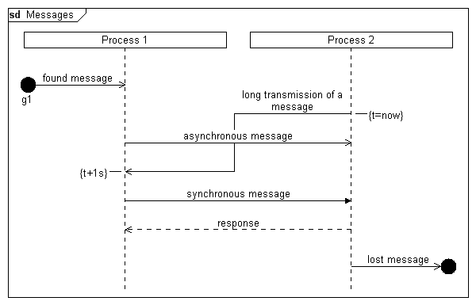

Syntax
Parameters
Syntax
Parameters
 messageid
Example
messageid
Example
|
DiagramName: Messages DiagramStyle: uml PageSize: 600,auto PageMargins: 10,10,10,10 process: p1, Process 1 process: p2, Process 2 found: p1, "found message","g1",l; msgbegin: m1, p2, p1, "long transmission of a message" linecomment: p2, "{t=now}",r; msg: p1,p2, "asynchronous message"; msgend: m1 linecomment:p1, "{t+1s}"; msg: p1,p2, "synchronous message",!; msg: p2, p1, "response",*; lost: p2, "lost message", ,r |
 |
See also